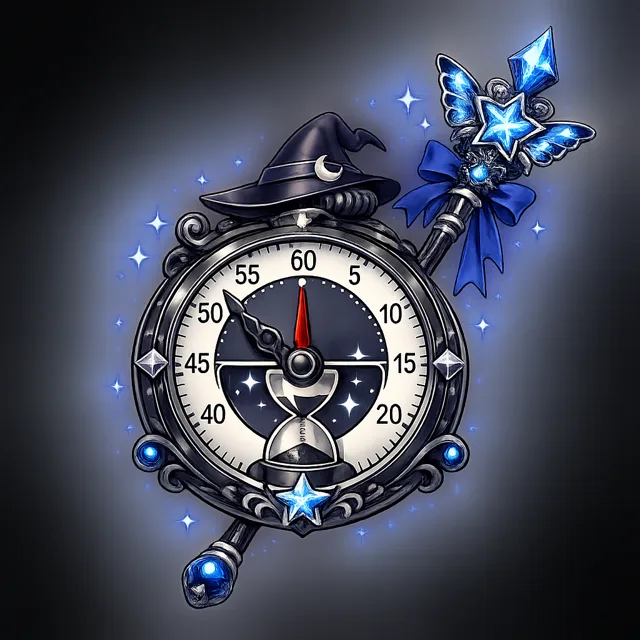

Stay on task, like magic.
Focus Pocus is a small timer that floats above your other windows and notices when you drift. Stop typing, scroll for too long or wander off to YouTube, and it calls you back. At the end of each session you rate how it went.

What it does
You start a session and get on with your work. Focus Pocus watches quietly and only speaks up when something looks off.
Notices when you stop
No keyboard or mouse for a while (10 minutes by default, and you can change it) and you get an alert.
Catches doom-scrolling
Ten minutes of nothing but scrolling counts as drifting off.
Knows your rabbit holes
Sites on your blocklist, like YouTube or manga, trigger a reminder every ten minutes.
Breaks count, honestly
Pause and resume as often as you like. Breaks are timed separately from focus.
Rate yourself
When you stop, slide from 😢 to 🔥 to say how the session really went.
Look back
See daily, weekly and monthly totals, and compare your own rating with the measured one.
Your sessions stay on your computer
The code is public. Your data isn't. Focus Pocus writes each session to a folder on your own machine and never uploads it anywhere.
On GitHub, for everyone
- The app's source code
- A sample dataset of made-up sessions (
logs-sample/) - This website
On your computer, only for you
- Your real sessions, saved to
Documents/FocusPocus/logs/ - Your blocklist of distracting sites
- You can move this folder from the app's settings
The dashboard runs on the sample data, so anyone can try it. You can also open your own logs folder there. Your files are read inside your browser and never leave your computer.
Run it yourself
You'll need Node.js. Then:
git clone https://github.com/mnicolee/Focus-Pocus.git
cd Focus-Pocus
npm install
npm startTo try things out without touching your real data, use npm run dev. It writes to a separate test folder and fills it with fake sessions.